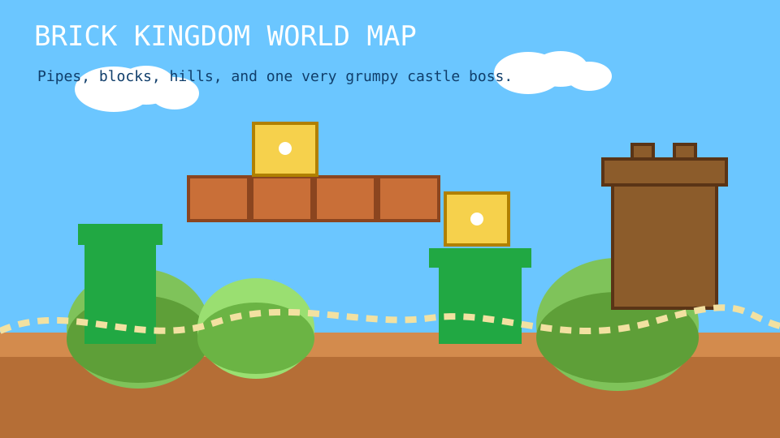

A retro platformer start screen built from the class starter, but remade with my own theme and art.
Run through pipes, jump past floating blocks, and make it to the shell boss castle before sunset.

This version uses original retro platformer artwork and a Mario-style color palette without copying official Nintendo assets.